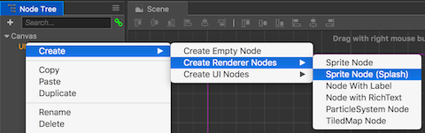
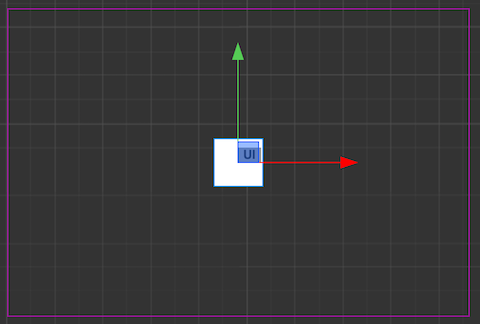
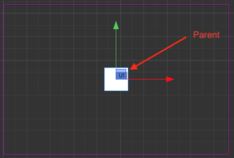
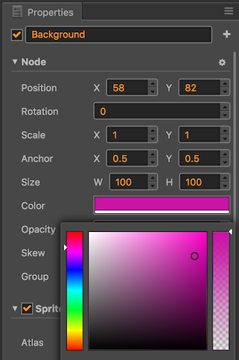
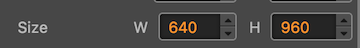
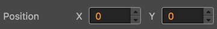
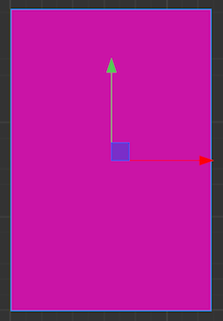

Setting a colored background
Unless you want a black background, the first step is to start building up the UI simulating a "layered" look. You might remember Layer objects from Cocos2d-x. However, in Cocos Creator Layer objects do not exist. Instead you can use a Node and set some properties to achieve the same concept as you could before with a Layer object.
UI housekeeping.
We need to do a few tasks to get started laying out our user interface. One really important task is to decide on a design resolution for our game. This is going to be a portrait oriented game so the pieces have enough time to fall from the top of the screen. Using landscape might not give the player enough time to react. Let's stick with the 960 x 640 design resolution. You can tell what the design resolution is by looking at the properties of the Canvas object:

However, since we want this game portrait we need to swap the width and height with each other. Our height needs to be the biggest number.

Next, in the Node tree panel, right click on Canvas node and select: Create --> Create Empty Node. This will create an empty node to hold our user interface items.

Next, right click on the newly created
Nodeand rename it to UI.
Creating our first layer
In the Node tree panel, Right click on UI node and select: Create --> Create Render Nodes --> Sprite Node (Splash).

You should see a small white colored
Nodeappear on theScene. Example:
It is important to note that Cocos Creator informs us of the newly created
Nodeobjects parent, in this case theNodenamed UI we created above.
Last, Right click on New Sprite(Splash) and rename it to Background.
Customizing our first layer
Now that we have our Node we need to assign it a color and how much space it will occupy on the Canvas. Typically a background layer might take up the entire Canvas. Let's adjust the Background node's properties to do exactly this.
First, select the Background node from the Node Tree panel.
Second, in the Properties panel, set the color to anything you like. I am going to stick close to the magenta shade from previous old school screenshot we referenced before.

Third, in the Properties panel, set the size and position of our Background node. We want it to take up the entire canvas, so this this should be set to the same size as the design resolution or in this case 640 x 960. Also, the position should be set to 0, 0 so the node starts at the bottom left corner of the canvas.
 
Last, double check to make sure what you have matches our progress so far.

Task: Now is a good time to save your project! From the File menu, select Save Scene or use your operating systems shortcut key.